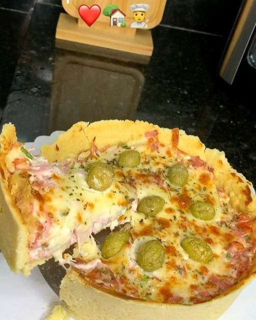

Empadão
Um prato clássico e delicioso, recheado com frango e temperos, ideal para almoço ou lanche da tarde.

Ingredientes
Rende 8 porções
- 500g de massa pronta para empadão
- 500g de peito de frango cozido e desfiado
- 1 cebola picada
- 2 dentes de alho picados
- 1 tomate picado
- 1/2 xícara de azeitonas picadas
- 1/2 xícara de cheiro-verde picado
- Sal e pimenta a gosto
- 1 gema para pincelar
Modo de Preparo
Tempo estimado: 60 minutos
- Preaqueça o forno a 180 °C.
- Refogue a cebola e o alho até dourar. Acrescente o tomate, frango, azeitonas e cheiro-verde. Tempere com sal e pimenta. Reserve.
- Abra metade da massa em uma forma, coloque o recheio e cubra com a outra metade da massa.
- Pincele a gema por cima e faça alguns cortes na massa para saída do vapor.
- Leve ao forno por 35-40 minutos ou até dourar.
- Retire do forno, deixe amornar e sirva.
Dica do Chef: Para deixar o empadão mais cremoso, adicione um pouco de requeijão ao recheio.